基本思想
基于用户的协同过滤算法是通过用户的历史行为数据发现用户对商品或内容的喜欢(如商品购买，收藏，内容评论或分享)，并对这些喜好进行度量和打分。根据不同用户对相同商品或内容的态度和偏好程度计算用户之间的关系。在有相同喜好的用户间进行商品推荐。简单的说就是如果A,B两个用户都购买了x、y、z三本图书，并且给出了5星的好评。那么A和B就属于同一类用户。可以将A看过的图书w也推荐给用户B。
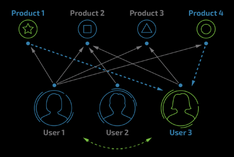
基于用户协同过滤算法的原理图
所以，协同过滤算法主要分为两个步骤：
1、寻找相似的用户集合；
2、寻找集合中用户喜欢的且目标用户没有的进行推荐。
具体实现
寻找用户间的相似度
Jaccard公式
Jaccard系数主要用于计算符号度量或布尔值度量的个体间的相似度，因为个体的特征属性都是由符号度量或者布尔值标识，因此无法衡量差异具体值的大小，只能获得“是否相同”这个结果，所以Jaccard系数只关心个体间共同具有的特征是否一致这个问题。如果比较X与Y的Jaccard相似系数，只比较xn和yn中相同的个数。
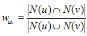
Jaccard公式
皮尔逊相关系数
皮尔逊相关系统是比欧几里德距离更加复杂的可以判断人们兴趣相似度的一种方法。它在数据不是很规范时，会倾向于给出更好的结果。
假定有两个变量X、Y，那么两变量间的皮尔逊相关系数可通过以下公式计算：
公式一：
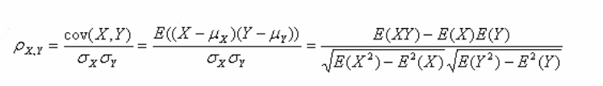
皮尔逊相关系数公式一
公式二：
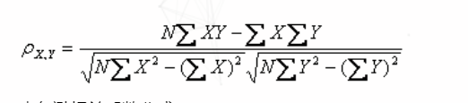
皮尔逊相关系数公式二
公式三：
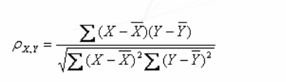
皮尔逊相关系数公式三
公式四：
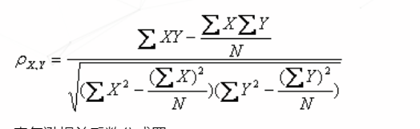
皮尔逊相关系数公式四
上述四个公式等价，其中E是数学期望，cov表示协方差，N表示变量取值的个数。
欧几里德距离
假定两个用户X、Y，均为n维向量，表示用户对n个商品的评分，那么X与Y的欧几里德距离就是：
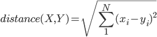
多维欧几里德距离公式
数值越小则代表相似度越高，但是对于不同的n，计算出来的距离不便于控制，所以需要进行如下转换：
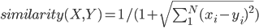
相似度公式
使得结果分布在(0,1]上，数值越大，相似度越高。
余弦距离
余弦距离，也称为余弦相似度，是用向量空间中两个向量余弦值作为衡量两个个体间差异大小的度量值。
与前面的欧几里德距离相似，用户X、Y为两个n维向量，套用余弦公式，其余弦距离表示为：
余弦距离公式
即两个向量夹角的余弦值。但是相比欧式距离，余弦距离更加注意两个向量在方向上的相对差异，而不是在空间上的绝对距离，具体可以借助下图来感受两者间的区别：
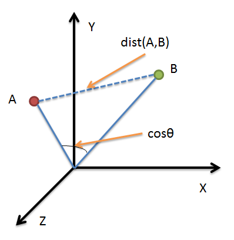
余弦距离与欧式距离的区别
推荐物品
在选取上述方法中的一种得到各个用户相似度后，针对目标用户u，我们选出最相似的k个用户，用集合S(u,k)表示，将S中所有用户喜欢的物品提取出来并去除目标用户u已经喜欢的物品。然后对余下的物品进行评分与相似度加权，得到的结果进行排序。最后由排序结果对目标用户u进行推荐。其中，对于每个可能推荐的物品i，用户u对其的感兴趣的程度可以用如下公式计算：
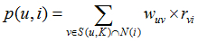
用户u对物品i感兴趣的程度
rvi表示用户v对i的喜欢程度，即对i的评分，wuv表示用户u和v之间的相似度。
收集用户偏好
要从用户的行为和偏好中发现规律，并基于此给予推荐，如何收集用户的偏好信息成为系统推荐效果最基础的决定因素。用户有很多方式向系统提供自己的偏好信息，而且不同的应用也可能大不相同，下面举例进行介绍：
表 1 用户行为和用户偏好
| 用户行为 | 类型 | 特征 | 作用 |
|---|---|---|---|
| 评分 | 显式 | 整数量化的偏好，可能的取值是 [0, n]；n 一般取值为 5 或者是 10 | 通过用户对物品的评分，可以精确的得到用户的偏好 |
| 投票 | 显式 | 布尔量化的偏好，取值是 0 或 1 | 通过用户对物品的投票，可以较精确的得到用户的偏好 |
| 转发 | 显式 | 布尔量化的偏好，取值是 0 或 1 | 通过用户对物品的投票，可以精确的得到用户的偏好,如果是站内，同时可以推理得到被转发人的偏好（不精确） |
| 保存书签 | 显示 | 布尔量化的偏好，取值是 0 或 1 | 通过用户对物品的投票，可以精确的得到用户的偏好 |
| 标记标签(Tag) | 显示 | 一些单词，需要对单词进行分析，得到偏好 | 通过分析用户的标签，可以得到用户对项目的理解，同时可以分析出用户的情感：喜欢还是讨厌 |
| 评论 | 显示 | 一段文字，需要进行文本分析，得到偏好 | 通过分析用户的评论，可以得到用户的情感：喜欢还是讨厌 |
| 点击流( 查看 ) | 隐式 | 一组用户的点击，用户对物品感兴趣，需要进行分析，得到偏好 | 用户的点击一定程度上反映了用户的注意力，所以它也可以从一定程度上反映用户的喜好 |
| 页面停留时间 | 隐式 | 一组时间信息，噪音大，需要进行去噪，分析，得到偏好 | 用户的页面停留时间一定程度上反映了用户的注意力和喜好，但噪音偏大，不好利用 |
| 购买 | 隐式 | 布尔量化的偏好，取值是 0 或 1 | 用户的购买是很明确的说明这个项目它感兴趣 |
以上列举的用户行为都是比较通用的，推荐引擎设计人员可以根据自己应用的特点添加特殊的用户行为，并用他们表示用户对物品的喜好|
在一般应用中，我们提取的用户行为一般都多于一种，关于如何组合这些不同的用户行为，基本上有以下两种方式：
- 将不同的行为分组：一般可以分为“查看”和“购买”等等，然后基于不同的行为，计算不同的用户 / 物品相似度。类似于当当网或者 Amazon 给出的“
购买了该图书的人还购买了 …”，“查看了图书的人还查看了 …” - 根据不同行为反映用户喜好的程度将它们进行加权，得到用户对于物品的总体喜好。一般来说，显式的用户反馈比隐式的权值大，但比较稀疏，毕竟进行显示反馈的用户是少数；同时相对于“查看”，“购买”行为反映用户喜好的程度更大，但这也因应用而异。
收集了用户行为数据，我们还需要对数据进行一定的预处理，其中最核心的工作就是：减噪和归一化。
- 减噪：用户行为数据是用户在使用应用过程中产生的，它可能存在大量的噪音和用户的误操作，我们可以通过经典的数据挖掘算法过滤掉行为数据中的噪音，这样可以是我们的分析更加精确。
- 归一化：如前面讲到的，在
计算用户对物品的喜好程度时，可能需要对不同的行为数据进行加权。但可以想象，不同行为的数据取值可能相差很大，比如，用户的查看数据必然比购买数据大的多，如何将各个行为的数据统一在一个相同的取值范围中，从而使得加权求和得到的总体喜好更加精确，就需要我们进行归一化处理。最简单的归一化处理，就是将各类数据除以此类中的最大值，以保证归一化后的数据取值在 [0,1] 范围中
进行了预处理后，根据不同应用的行为分析方法，可以选择分组或者加权处理，之后我们可以得到一个用户偏好的二维矩阵，一维是用户列表，另一维是物品列表，值是用户对物品的偏好，一般是 [0,1] 或者 [-1, 1] 的浮点数值。
基于用户的 CF（User CF）
基于用户的协同过滤(user-basedCF)是基于这样一个事实：每个用户都有与其具有相似兴趣爱好和购买行为的用户群，这些相似用户(邻居用户)的购买项目可以作为对当前用户(目标用户)进行项目推荐的基础。因此，这种方法也被称为基于邻居的协同过滤或最近邻居算法。
基于用户的 CF 的基本思想相当简单，基于用户对物品的偏好找到相邻邻居用户，然后将邻居用户喜欢的推荐给当前用户。计算上，就是将一个用户对所有物品的偏好作为一个向量来计算用户之间的相似度，找到 K 邻居后，根据邻居的相似度权重以及他们对物品的偏好，预测当前用户没有偏好的未涉及物品，计算得到一个排序的物品列表作为推荐。图 2 给出了一个例子，对于用户 A，根据用户的历史偏好，这里只计算得到一个邻居 – 用户 C，然后将用户 C 喜欢的物品 D 推荐给用户 A。
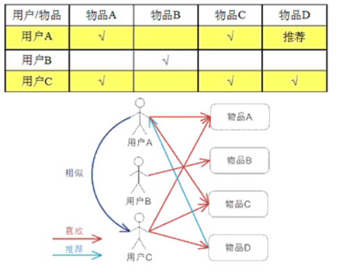
图 2 基于用户的 CF 的基本原理
基于物品的 CF（Item CF）
基于物品的 CF 的原理和基于用户的 CF 类似，只是在计算邻居时采用物品本身，而不是从用户的角度，即基于用户对物品的偏好找到相似的物品，然后根据用户的历史偏好，推荐相似的物品给他。从计算的角度看，就是将所有用户对某个物品的偏好作为一个向量来计算物品之间的相似度，得到物品的相似物品后，根据用户历史的偏好预测当前用户还没有表示偏好的物品，计算得到一个排序的物品列表作为推荐。图 3 给出了一个例子，对于物品 A，根据所有用户的历史偏好，喜欢物品 A 的用户都喜欢物品 C，得出物品 A 和物品 C 比较相似，而用户 C 喜欢物品 A，那么可以推断出用户 C 可能也喜欢物品 C。
基于物品的协同过滤的一个优点是容易解释推荐原因，第二个是电商网站中物品的相似度是相对不变的，物品相似度的矩阵维护起来相对容易。
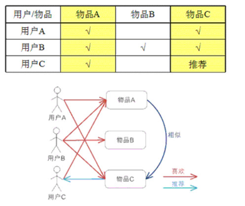
图 3 基于物品的 CF 的基本原理
User CF vs. Item CF
前面介绍了User CF 和Item CF 的基本原理，下面我们分几个不同的角度深入看看它们各自的优缺点和适用场景：
计算复杂度
Item CF 和 User CF 是基于协同过滤推荐的两个最基本的算法，User CF 是很早以前就提出来了，Item CF 是从 Amazon 的论文和专利发表之后（2001 年左右）开始流行，大家都觉得 Item CF 从性能和复杂度上比 User CF 更优，其中的一个主要原因就是对于一个在线网站，用户的数量往往大大超过物品的数量，同时物品的数据相对稳定，因此计算物品的相似度不但计算量较小，同时也不必频繁更新。但我们往往忽略了这种情况只适应于提供商品的电子商务网站，对于新闻，博客或者微内容的推荐系统，情况往往是相反的，物品的数量是海量的，同时也是更新频繁的，所以单从复杂度的角度，这两个算法在不同的系统中各有优势，推荐引擎的设计者需要根据自己应用的特点选择更加合适的算法。
适用场景
在非社交网络的网站中，内容内在的联系是很重要的推荐原则，它比基于相似用户的推荐原则更加有效。比如在购书网站上，当你看一本书的时候，推荐引擎会给你推荐相关的书籍，这个推荐的重要性远远超过了网站首页对该用户的综合推荐。可以看到，在这种情况下，Item CF 的推荐成为了引导用户浏览的重要手段。同时 Item CF 便于为推荐做出解释，在一个非社交网络的网站中，给某个用户推荐一本书，同时给出的解释是某某和你有相似兴趣的人也看了这本书，这很难让用户信服，因为用户可能根本不认识那个人；但如果解释说是因为这本书和你以前看的某本书相似，用户可能就觉得合理而采纳了此推荐。
相反的，在现今很流行的社交网络站点中，User CF 是一个更不错的选择，User CF 加上社会网络信息，可以增加用户对推荐解释的信服程度。
推荐多样性和精度
研究推荐引擎的学者们在相同的数据集合上分别用 User CF 和Item CF计算推荐结果，发现推荐列表中，只有 50% 是一样的，还有 50% 完全不同。但是这两个算法确有相似的精度，所以可以说，这两个算法是很互补的。
关于推荐的多样性，有两种度量方法：
第一种度量方法是从单个用户的角度度量，就是说给定一个用户，查看系统给出的推荐列表是否多样，也就是要比较推荐列表中的物品之间两两的相似度，不难想到，对这种度量方法，Item CF 的多样性显然不如 User CF 的好，因为 Item CF 的推荐就是和以前看的东西最相似的。
第二种度量方法是考虑系统的多样性，也被称为覆盖率 (Coverage)，它是指一个推荐系统是否能够提供给所有用户丰富的选择。在这种指标下，Item CF 的多样性要远远好于 User CF, 因为 User CF 总是倾向于推荐热门的，从另一个侧面看，也就是说，Item CF 的推荐有很好的新颖性，很擅长推荐长尾里的物品。所以，尽管大多数情况，Item CF 的精度略小于 User CF， 但如果考虑多样性，Item CF 却比 User CF 好很多。
如果你对推荐的多样性还心存疑惑，那么下面我们再举个实例看看 User CF 和 Item CF 的多样性到底有什么差别。首先，假设每个用户兴趣爱好都是广泛的，喜欢好几个领域的东西，不过每个用户肯定也有一个主要的领域，对这个领域会比其他领域更加关心。给定一个用户，假设他喜欢 3 个领域 A,B,C，A 是他喜欢的主要领域，这个时候我们来看 User CF 和 Item CF 倾向于做出什么推荐：如果用 User CF, 它会将 A,B,C 三个领域中比较热门的东西推荐给用户；而如果用 ItemCF，它会基本上只推荐 A 领域的东西给用户。所以我们看到因为 User CF 只推荐热门的，所以它在推荐长尾里项目方面的能力不足；而 Item CF 只推荐 A 领域给用户，这样他有限的推荐列表中就可能包含了一定数量的不热门的长尾物品，同时 Item CF 的推荐对这个用户而言，显然多样性不足。但是对整个系统而言，因为不同的用户的主要兴趣点不同，所以系统的覆盖率会比较好。
从人们需求的角度来看，大多数的需求会集中在头部，而这部分我们可以称之为流行，而分布在尾部的需求是个性化的，零散的小量的需求。而这部分差异化的、少量的需求会在需求曲线上面形成一条长长的“尾巴”，而所谓长尾效应就在于它的数量上，将所有非流行的市场累加起来就会形成一个比流行市场还大的市场。
从上面的分析，可以很清晰的看到，这两种推荐都有其合理性，但都不是最好的选择，因此他们的精度也会有损失。其实对这类系统的最好选择是，如果系统给这个用户推荐 30 个物品，既不是每个领域挑选 10 个最热门的给他，也不是推荐 30 个 A 领域的给他，而是比如推荐 15 个 A 领域的给他，剩下的 15 个从 B,C 中选择。所以结合 User CF 和 Item CF 是最优的选择，结合的基本原则就是当采用 Item CF 导致系统对个人推荐的多样性不足时，我们通过加入 User CF 增加个人推荐的多样性，从而提高精度，而当因为采用 User CF 而使系统的整体多样性不足时，我们可以通过加入 Item CF 增加整体的多样性，同样同样可以提高推荐的精度。
用户对推荐算法的适应度
前面我们大部分都是从推荐引擎的角度考虑哪个算法更优，但其实我们更多的应该考虑作为推荐引擎的最终使用者 — 应用用户对推荐算法的适应度。
对于 User CF，推荐的原则是假设用户会喜欢那些和他有相同喜好的用户喜欢的东西，但如果一个用户没有相同喜好的朋友，那 User CF 的算法的效果就会很差，所以一个用户对的 CF 算法的适应度是和他有多少共同喜好用户成正比的。
Item CF 算法也有一个基本假设，就是用户会喜欢和他以前喜欢的东西相似的东西，那么我们可以计算一个用户喜欢的物品的自相似度。一个用户喜欢物品的自相似度大，就说明他喜欢的东西都是比较相似的，也就是说他比较符合 Item CF 方法的基本假设，那么他对 Item CF 的适应度自然比较好；反之，如果自相似度小，就说明这个用户的喜好习惯并不满足 Item CF 方法的基本假设，那么对于这种用户，用 Item CF 方法做出好的推荐的可能性非常低。
总结
| UserCF | ItemCF | |
|---|---|---|
| 性能 | 适用于用户较少的场合，如果用户很多，计算用户相似度矩阵代价很大 | 适用于物品数明显小于用户数的场合，如果物品很多（网页），计算物品相似度矩阵代价很大 |
| 领域 | 时效性较强，用户个性化兴趣不太明显的领域 | 长尾物品丰富，用户个性化需求强烈的领域 |
| 实时性 | 用户有新行为，不一定造成推荐结果的立即变化 | 用户有新行为，一定会导致推荐结果的实时变化 |
| 冷启动 | 在新用户对很少的物品产生行为后，不能立即对他进行个性化推荐，因为用户相似度表是每隔一段时间离线计算的 | 新用户只要对一个物品产生行为，就可以给他推荐和该物品相关的其他物品 |
| 新物品上线后一段时间，一旦有用户对物品产生行为，就可以将新物品推荐给和对它产生行为的用户兴趣相似的其他用户 | 但没有办法在不离线更新物品相似度表的情况下将新物品推荐给用户 | |
| 推荐理由 | 很难提供令用户信服的推荐解释 | 利用用户的历史行为给用户做推荐解释，可以令用户比较信服 |
矩阵分解
Spark推荐模型库当前只包含基于矩阵分解（matrix factorization）的实现，由此我们也将重点关注这类模型。它们有吸引人的地方。首先，这些模型在协同过滤中的表现十分出色。而在Netflix Prize等知名比赛中的表现也很拔尖
显式矩阵分解
要找到和“用户物品”矩阵近似的k维（低阶）矩阵，最终要求出如下两个矩阵：一个用于表示用户的U × k维矩阵，以及一个表征物品的I × k维矩阵。
这两个矩阵也称作因子矩阵。它们的乘积便是原始评级矩阵的一个近似。值得注意的是，原始评级矩阵通常很稀疏，但因子矩阵却是稠密的。
特点：因子分解类模型的好处在于，一旦建立了模型，对推荐的求解便相对容易。但也有弊端，即当用户和物品的数量很多时，其对应的物品或是用户的因子向量可能达到数以百万计。
这将在存储和计算能力上带来挑战。另一个好处是，这类模型的表现通常都很出色。
隐式矩阵分解（关联因子分确定，可能随时会变化）
隐式模型仍然会创建一个用户因子矩阵和一个物品因子矩阵。但是，模型所求解的是偏好矩阵而非评级矩阵的近似。类似地，此时用户因子向量和物品因子向量的点积所得到的分数
也不再是一个对评级的估值，而是对某个用户对某一物品偏好的估值（该值的取值虽并不严格地处于0到1之间，但十分趋近于这个区间）
最小二乘法（Alternating Least Squares ALS）：解决矩阵分解的最优化方法
ALS的实现原理是迭代式求解一系列最小二乘回归问题。在每一次迭代时，固定用户因子矩阵或是物品因子矩阵中的一个，然后用固定的这个矩阵以及评级数据来更新另一个矩阵。
之后，被更新的矩阵被固定住，再更新另外一个矩阵。如此迭代，直到模型收敛（或是迭代了预设好的次数）。